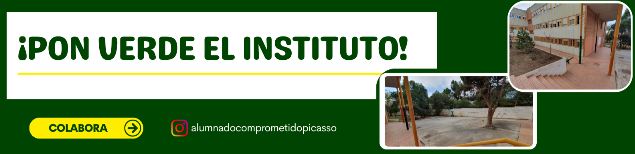
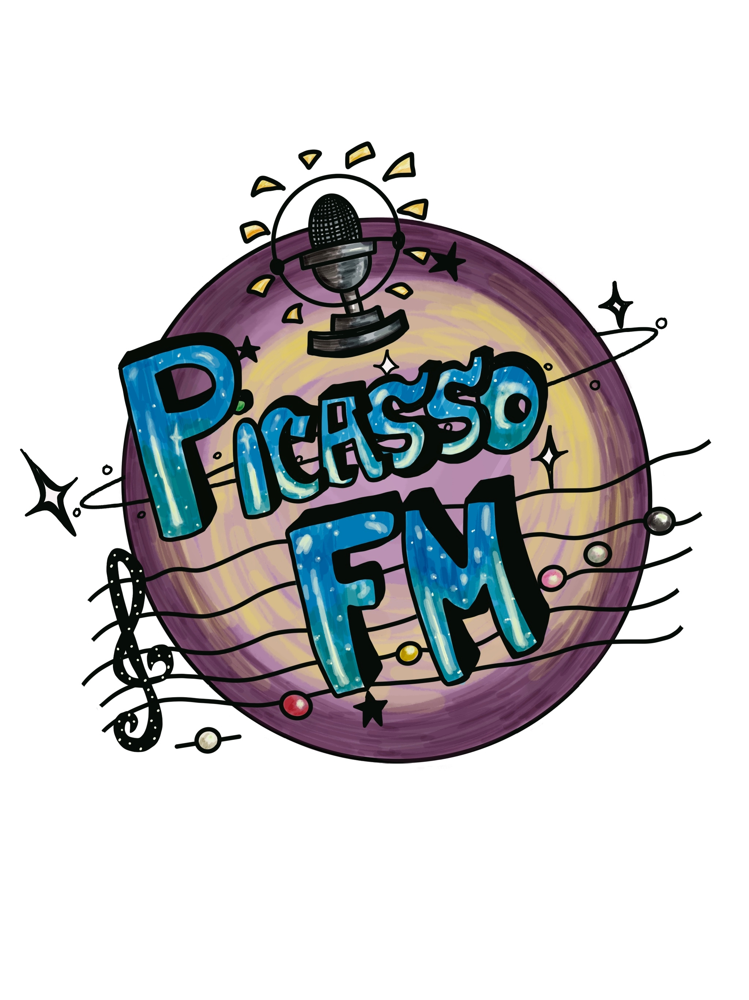

Nadie puede dudar hoy en día de la importancia de la prensa. Todo es noticia y la difusión de lo que sucede en el mundo se puede hacer de diferentes maneras: periódicos, revistas, blogs, internet, YouTube, redes sociales... Todos y cada uno de ellos hacen que los acontecimientos se difundan de manera inmediata entre la audiencia. Y ese es el reto que te proponemos aquí: debes convertirte en periodista de tu propio instituto para difundir entre toda la comunidad educativa nuestro proyecto "¡Pon verde el instituto!".
A través de este REA, conocerás las características de los textos periodísticos y sus principales géneros informativos, a la vez que trabajaremos la expresión oral y escrita, nos informaremos de distintas realidades relacionadas con los Objetivos de Desarrollo Sostenible (ODS) marcados en la Agenda 2030 e informaremos de cómo vamos a contribuir a su consecución desde la actuación local en nuestro centro. ¿Te atreves?
En este proyecto de trabajo, por una parte queremos sumergirnos en el mundo de la información a través del análisis de diferentes noticias pero, además, seremos reporteros y entrevistadores y elaboraremos nuestros propios textos periodísticos con una mirada crítica.
Nuestro objetivo es que toda la comunidad educativa del IES Pablo Picasso se conciencie sobre la importancia del cuidado de nuestro planeta Tierra, conozca con detalle nuestro proyecto de reverdecer el instituto y se implique en hacer de nuestro entorno más cercano un lugar más ecológico y sostenible.

Para ello, vamos a investigar y aprender sobre los géneros periodísticos, conoceremos en profundidad las características de las noticias, los reportajes y las entrevistas para poder ser unos buenos redactores y, finalmente, veremos cuáles son sus peculiaridades según el medio de difusión, con especial atención al radiofónico, que para eso tenemos nuestra radio escolar y nuestro canal de Picasso FM en Ivoox.
Trabajo en equipo y organización del aula
Como forma de trabajo habitual nos organizaremos en equipos de varias personas para distribuir las tareas de manera colaborativa. Algunas tareas las haremos, previamente, en parejas para después completarlas con las otras parejas del equipo. En ocasiones, expondremos nuestro trabajo de grupo ante el resto de la clase.
Evaluación
Antes de comenzar el proyecto, revisaremos en clase cada instrumento de evaluación, ya que nos darán pautas de lo que se espera que consigamos. Nuestro trabajo y aprendizaje será evaluado a lo largo del proyecto con diferentes rúbricas y plantillas de evaluación. Tomaremos parte activa en esta evaluación, utilizando las siguientes herramientas para autoevaluar nuestro trabajo y para coevaluar el de nuestros compañeros y compañeras. Serán imprescindibles otros dos instrumentos:
- Diario personal de aprendizaje: a lo largo del proyecto, al final de cada secuencia, iremos rellenando un "Diario personal de aprendizaje" en el que recogeremos lo que vamos aprendiendo, contando nuestra experiencia con cada tarea, lo que nos ha resultado más interesante o más difícil..., y la completaremos con imágenes de lo que vamos aprendiendo en el proyecto, de lo que nos haya gustado especialmente... Cuando terminemos el proyecto, revisará que esté completo y bien expresado (sin faltas de ortografía ni puntuación) antes de entregarlo.
- Portafolio del equipo: esta herramienta sirve para poder revisar el progreso de nuestro trabajo en grupo. Para recoger algunos de los materiales que elaboremos, cada grupo creará una carpeta en Drive, compartida con todos los miembros del equipo y la profesora. Si tenemos dudas sobre el uso de Google drive podemos consultar este recurso "Caramelos digitales". Si no estamos habituados a utilizar esta aplicación, podemos también crear nuestro portafolio en una carpeta o archivador, donde iremos guardando de forma ordenada todas las producciones en papel. En algunos casos, el secretario del equipo subirá el trabajo de grupo a Classroom si hay una tarea creada para ello.